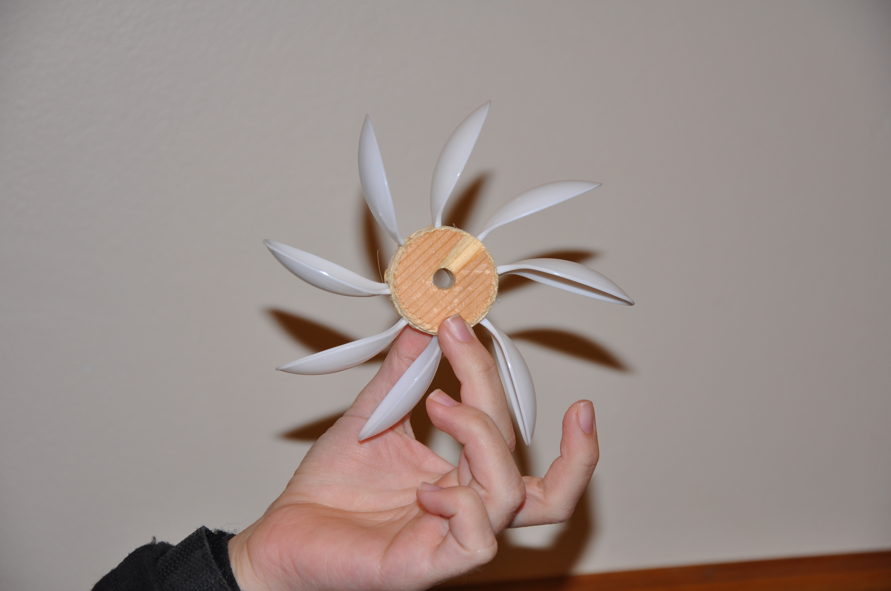
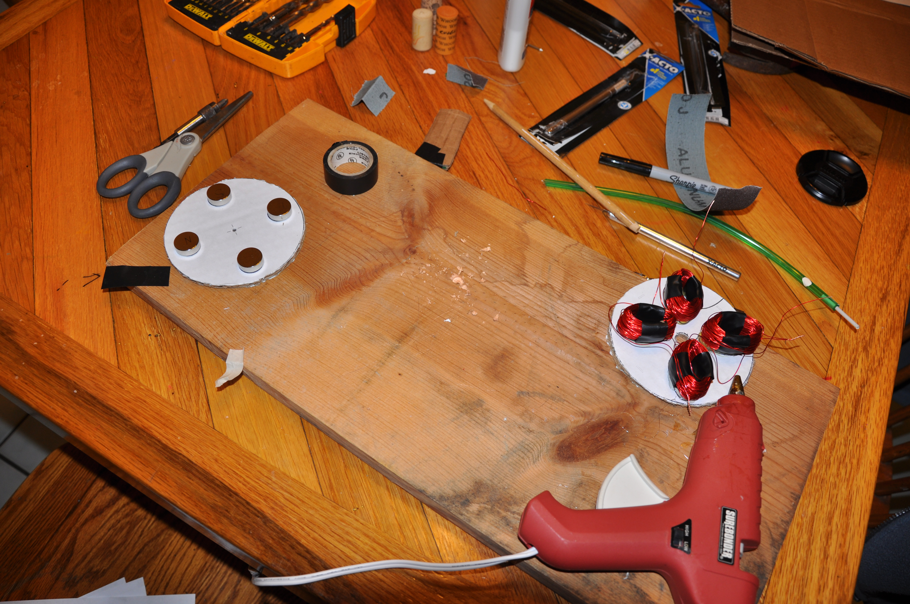
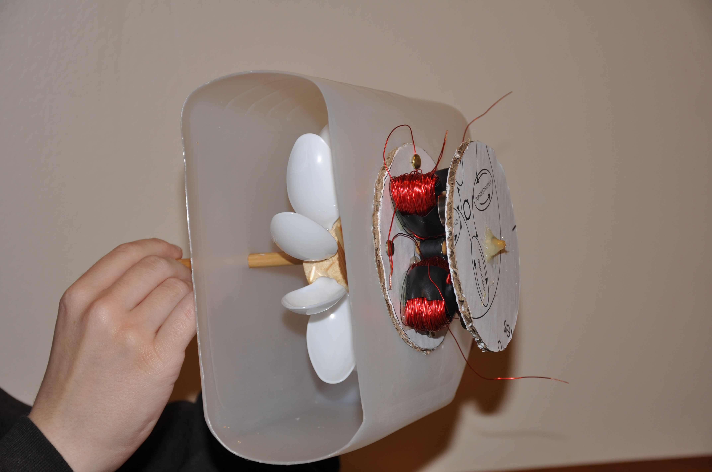

I worked for several months at the Florida Solar Energy Center in the IT Department. My primary objective was redesigning the employee website. It had been the same for well over ten years and was both old-looking and outdated. I altered the webpages' design as instructed and condensed and expanded upon the information provided, removing useless pages while adding needed ones. I also created several tutorials for using certain programs (like Disk Defragmenter and Disk Cleanup) for both Windows XP and Windows 7.
Although not a computer-based project, my high school senior project was an interesting and rewarding challenge. I built a small hydro generator that could produce enough power to light up a small lightbulb. Many of the items were easy to find in homes or cheap to buy, such as plastic spoons, a plastic jug, and a glue gun. Only the magnets and the copper wire were expensive or difficult to obtain. Energy conservation has always been present throughout my childhood, and I enjoyed working on a project that centered around this issue. I also learned a good deal about how electric currents work, which is valuable knowledge when working with computer hardware.
  